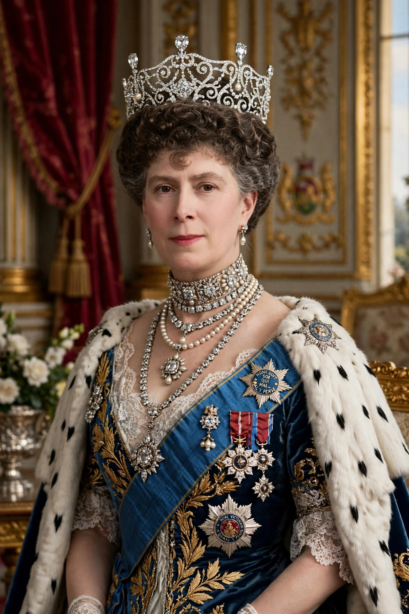

Mary of Teck (Victoria Mary Augusta Louise Olga Pauline Claudine Agnes; 26 May 1867 – 24 March 1953) was Queen of the United Kingdom and the British Dominions, and Empress of India, from 6 May 1910 until 20 January 1936 as the wife of King-Emperor George V.

| Mary of Teck | |
|---|---|
| Tenure | 6 May 1910 – 20 January 1936 |
| Born | 26 May 1867, Kensington Palace, London |
| Died | 24 March 1953, Marlborough House, London |
| Spouse | George V (m. 1893; died 1936) |
Born at Kensington Palace, she was the daughter of Francis, Duke of Teck, and Princess Mary Adelaide of Cambridge, a granddaughter of George III. She was first engaged to Prince Albert Victor, who died in 1892, then married his brother George in 1893.
As queen she supported charities, hospitals, and the armed forces during the First World War. She was mother of Edward VIII and George VI, and grandmother of Elizabeth II.
Widowed in 1936, she lived through the abdication and the Second World War, dying shortly before Elizabeth II's coronation. The ocean liner Queen Mary was named after her.